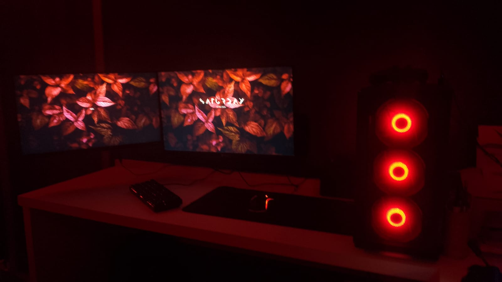
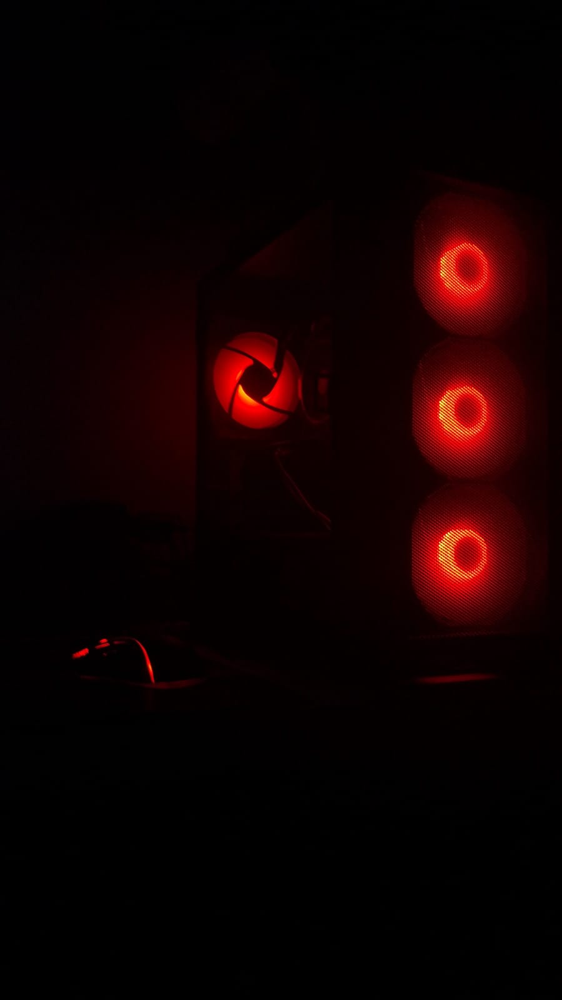
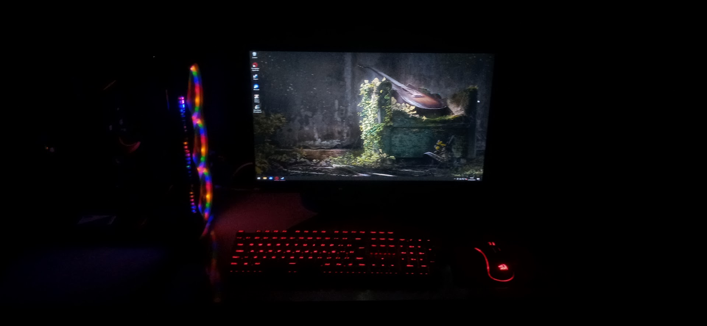

SYSTEM://GHOST is a modular digital environment created to centralize experimental projects, interactive interfaces and identity-driven systems inside a single connected structure.
Originally initialized as a personal interface project, the system gradually evolved into a living archive where every module represents an active idea, operational concept or experimental development.
The architecture combines terminal-inspired aesthetics, classified dossier structures and minimalist cybernetic design to create the sensation of accessing a partially restricted network.
Instead of functioning as a traditional portfolio, SYSTEM://GHOST operates as a dynamic database where projects are treated as connected system modules capable of continuous expansion and evolution.
The current system state remains under active development. New modules, interface structures and experimental concepts are constantly being integrated into the network.
SYSTEM://GHOST was designed using a modular front-end architecture focused on scalability, visual consistency and independent system components.
The project structure separates navigation systems, terminal rendering, visual effects and dynamic content into isolated modules, allowing continuous expansion without compromising the integrity of the core environment.
The interface is built primarily using HTML, CSS and JavaScript, organized into dedicated system layers responsible for styling, animations, navigation logic and interactive behaviors.
Every page inside the network functions as an independent operational module while still remaining visually and structurally connected to the main SYSTEM://GHOST infrastructure.
The architecture was intentionally developed to support future integrations including new project databases, terminal systems, experimental interfaces and larger interactive environments.
The framework currently remains in an active development state, with continuous updates focused on expanding the network structure, improving interface systems and introducing new operational modules.
The current version already contains the core visual identity, modular navigation architecture and experimental database structure that define the foundation of the system.
Future development stages include advanced terminal interaction, additional project environments, dynamic system interfaces and larger interconnected modules designed to evolve alongside the network itself.
As development progresses, the system is expected to transform from a personal experimental environment into a fully connected digital ecosystem capable of supporting multiple independent projects inside a unified infrastructure.
The framework is engineered with a singular, overarching objective: to relentlessly push the limits of my technical capabilities and software architecture skills.
It serves as an active laboratory for mastering complex front-end frameworks, integrating new programming languages, and refining my proficiency through hands-on, high-level development.
By treating this digital environment as a continuously evolving construct, I aim to elevate the standard of all my future projects, ensuring each new module is faster, smarter, and visually superior to the last.

Alduin at his best
Alduin in his most beautiful photo.
Where it all started